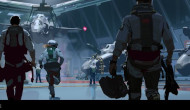
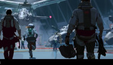

Explore o universo de Halo - do Início ao inifinito
Sobre a Franquia
Halo é mais do que uma série de jogos: é um marco cultural na história dos videogames. Lançada em 2001 pela Bungie e consolidada pela Microsoft, a saga transformou o gênero de tiro em primeira pessoa, unindo ação cinematográfica, enredos complexos e um universo vasto repleto de mistérios. O confronto entre humanidade, Covenant e forças ancestrais construiu uma mitologia épica que se estende por livros, séries e quadrinhos. Ao longo das décadas, Halo se manteve como sinônimo de inovação, trazendo batalhas memoráveis, personagens icônicos e trilhas sonoras inesquecíveis. É a junção entre tecnologia, drama e heroísmo que faz da franquia um dos pilares mais duradouros da cultura gamer.
 


Linha do Tempo dos Jogos
Halo: Reach (2010)
O último suspiro de um mundo sitiado. Em meio à queda inevitável de Reach, um esquadrão de Spartans luta não por vitória, mas por honra. Cada missão é um fragmento da tragédia que abre caminho para o início da lenda.
Halo: Reach
Informações Técnicas
- Lançamento: 14 de setembro de 2010
- Desenvolvedora: Bungie
- Plataforma original: Xbox 360
- Contexto no tempo da franquia: eventos se conectam diretamente a Halo: Combat Evolved, que acontece poucas semanas depois.
Resumo da História
1. Início da invasão
Em julho de 2552, o Covenant descobre Reach por causa de um artefato forerunner e inicia uma invasão furtiva ao planeta, principal centro militar da UNSC.
2. Equipe Noble entra em ação
Você controla o Spartan “Noble Six”, membro da Equipe Noble — liderada por Carter, Kat, Jorge, Emile e Jun — em missões que vão desde investigação de comunicações até defesa de bases e evacuação de civis.
3. Sacrifícios da equipe
Durante o conflito, Jorge se sacrifica para destruir um cargueiro Covenant, Kat morre por um sniper, e Carter imobiliza tropas para garantir a missão. Emile também se sacrifica protegendo a nave Pillar of Autumn.
4. Cortana entregue à Pillar of Autumn
O objetivo principal passa a ser entregar a IA Cortana e dados sobre um artefato forerunner à nave Pillar of Autumn, que parte rumo ao primeiro halo.
5. Clímax e conclusão trágica
Noble Six fica para trás e morre em combate para garantir a fuga da nave. A superfície de Reach é completamente “glassed”, e o jogo termina com a frase: “Reach caiu, mas sua coragem nunca será esquecida”..
Conexões com a fraquia
Prequela direta de Halo: Combat Evolved. A partida da Pillar of Autumn parte diretamente de Reach, e sua rota leva ao primeiro halo.
Contextualiza o desaparecimento de Reach, fundamental para a atmosfera do jogo.
História de Cortana começa aqui, entregando-a ao Capitão Keyes e Master Chief, elementos essenciais no universo Halo.
Personagens Principais
- Noble Six – protagonista jogável; último membro ativo da equipe
- Carter, Kat, Jorge, Emile, Jun – cada um com papel e destino marcante
- Cortana – IA vital para a história
- Dra. Halsey cientista que cria os Spartans e Cortana
Curiosidades e Detalhes de Lore
- Eventos duram cerca de um mês no cronograma de julho a agosto de 2552.
- Mantém ligação estreita com o romance The Fall of Reach, embora contenha pequenas diferenças cronológicas.
- É a primeira história focada em um esquadrão Spartan em vez do Master Chief — gerando maior impacto emocional.
Halo: Combat Evolved (2001)
O despertar do herói. Isolado em um anel misterioso, o Spartan-117 descobre segredos capazes de alterar o destino da galáxia. Entre ruínas antigas e batalhas implacáveis, nasce a lenda do Master Chief.
Halo: Combat Evolved
Informações Técnicas
- Lançamento: 15 de novembro de 2001
- Desenvolvedora: Bungie
- Plataforma original: Xbox (e posteriormente Windows, Mac)
- Contexto no tempo da franquia: começa imediatamente após a queda de Reach, enquanto a Pillar of Autumn foge via slip-space; introduz Master Chief e Cortana em sua primeira missão juntos.
Resumo da História
1. Salto para o desconhecido
Após escapar da destruição de Reach, a Pillar of Autumn faz um salto cego e encontra um enorme anel artificial — o Halo. O Covenant persegue a nave, forçando-a a pousar e iniciar a evacuação.
2. Protegendo Cortana
O Capitão Keyes entrega Cortana ao Master Chief para evitar que o Covenant descubra informações cruciais sobre a Terra. Chief escapa na cápsula com Cortana e cai na superfície do Halo.
3. Descobrindo o Halo e a Flood
Chief reúne sobreviventes humanos, resgata Keyes de uma nave Covenant (Truth and Reconciliation) e descobre que o Halo é uma arma capaz de exterminar toda vida — e também uma prisão que contém a ameaça parasita conhecida como Flood.
4. O monitor traidor
O guardião 343 Guilty Spark convence Chief a activar o Halo através do Índice, alegando conter o Flood. Porém, Cortana descobre que acionar o anel exterminaria toda vida senciente — incluindo a humanidade.
5. Destruição do Halo
Chief e Cortana fogem do controle de Guilty Spark, voltam até os destroços da Pillar of Autumn, instalam a autodestruição da nave e escapam num caça momentos antes de o Halo ser detonado.
6. Epílogo aberto
O Halo e a Pillar são destruídos, mas resta a revelação de que existem outros anéis semelhantes — abrindo caminho para os jogos seguintes.
Conexões com a fraquia
Sequência direta ao final de Halo: Reach. O salto cego é resposta à queda de Reach.
Introduz os Flood, inimigo central dos jogos seguintes.
Apresenta 343 Guilty Spark (monitor de Installation 04) e o conceito do Índice — elementos chaves do lore.
Consolida a parceria entre Master Chief e Cortana, que percorre toda a série.
Personagens Principais
- Master Chief (John-117) – protagonista, último Spartan-II ativo no início do jogo
- Cortana – IA tática que guia Chief e descobre os segredos do Halo
- Capitão Jacob Keyes – comandante da Pillar of Autumn, foco de missão de resgate
- 343 Guilty Spark monitor do Halo que se torna antagonista
- Sargento Avery Johnson líder humano presente em batalha
Curiosidades e Detalhes de Lore
- A campanha original tem 10 missões incluindo "The Library" e "The Maw".
- O jogo se passa em apenas 4 dias (19 a 22 de setembro de 2552).
- Introduziu o conceito de ringworld influenciado em obras como Ringworld (Larry Niven) e Culture Orbitals.
- Estabelece que ativar o Halo extingue toda vida senciente num raio de 25 mil anos‑luz para conter o Flood
Halo 2 (2004)
A guerra se expande muito além das estrelas. O conflito entre humanidade e Covenant atinge seu ápice, revelando traições e alianças improváveis. O destino de mundos inteiros pende na balança do sacrifício.
Halo 2
Informações Técnicas
- Lançamento: 9 de novembro de 2004
- Desenvolvedora: Bungie
- Plataforma original: Xbox (PC em 2007)
- Contexto no tempo da franquia: sequela de Halo: Combat Evolved, ambientada no outono de 2552, continua a Guerra Humano-Covenant logo após os eventos do primeiro Halo.
Resumo da História
1. Queda do Cairo Station & novo Arbiter
O jogo começa com uma cerimônia no Cairo Station celebrando o Master Chief e Sargento Johnson. O Covenant, liderado pelo Profeta do Arrependimento (Regret), invade a estação. Enquanto isso, Thel 'Vadamee, chefe Sangheili, é desonrado por não impedir a fuga da Pillar of Autumn e se torna o novo Arbiter, cumprindo tarefas suicidas para restaurar seu status.
2. Chief chega a Halo 05
Master Chief parte com a frota para o Anel 05. Ele lidera uma incursão com ODSTs para capturar Regret. No anel, enfrenta tropas Covenant, resgata Cortana e descobre um tesouro Forerunner: o Sacred Icon (Ícone Sagrado) necessário para usar o Halo.
3. Civil war entre os Covenant
Dentro de High Charity, Arbiter chega em paralelo. Ele combate hereges Sangheili que questionam os Profetas e testemunha a ascensão dos Brutes sob o profeta Tarântula (Tartarus). Em um confronto sangrento, rumores de traição religiosa surgem.
4. Encontro com Gravemind & aliança forçada
Master Chief e Arbiter são capturados pelo Gravemind, líder da Flood. O parasita os força a impedir ambos os lados — Covenant e humanidade — de ativar o anel, ameaçando toda vida senciente.
5. Final abrupto e cliffhanger
Chief consegue frustrar os planos de Regret e impede a ativação, enquanto Arbiter confronta e mata Tartarus, recuperando o Ícone. A campanha termina com Master Chief retornando à Terra para defender a capital, deixando um gancho direto para Halo 3.
Conexões com a fraquia
Expande a perspectiva ao incluir o Arbiter, um Covenant Sangheili reabilitado e jogável.
A guerra civil Covenant(Elites vs Brutes) emerge após a queda dos Profetas — elemento central em Halo 3.
O aliança tensa entre humanidade, Elites e Gravemind amplia o universo: agora três facções principais tornam-se antagonistas.
Personagens Principais
- Master Chief (John-117) – protagonista humano, combate no Anel 05
- Arbiter (Thel 'Vadamee) – Sangheili desonrado, cumpre missão de redenção e se alia aos humanos
- Profeta do Arrependimento (Regret) – instiga a invasão ao sistema terrestre/Halo
- Tartarus profeta de guerra brutes e antagonista final
- Gravemind mente coletora da Flood que força a cooperação entre o Chief e o Arbiter
- Sargento Johnson aliado humano constante
Curiosidades e Detalhes de Lore
- Foi o primeiro FPS com multiplayer global no Xbox Live, quebrando recordes de horas jogadas.
- Introduziu o elemento jogável do Arbiter como grande plot twist, humanizando o Covenant.
- O enredo transfere o poder no Covenant aos Brutes criando conflito interno e reforçando mitologia religiosa no jogo.
- A prisão de Master Chief e Arbiter pelo Gravemind é o ponto alto filosófico, questionando o dogma e motivação de cada lado
Halo 3: ODST (2009)
Nos escombros de Nova Mombasa, soldados comuns enfrentam o extraordinário. Sem armaduras titânicas ou glória assegurada, eles provam que coragem não é exclusividade dos Spartans.
Halo 3: ODST
Informações Técnicas
- Lançamento: 22 de setembro de 2009
- Desenvolvedora: Bungie
- Plataforma original: Xbox 360 (posteriormente PC/Xbox One via Master Chief Collection)
- Contexto no tempo da franquia: spin-off que se passa durante e após Halo 2, mostrando o que ocorreu em Nova Mombasa enquanto o Covenant terra em “Slip‑space” e precede os eventos de Halo 3.
Resumo da História
1. Queda em Nova Mombasa
Durante uma missão, uma unidade de ODSTs — incluindo Buck, Romeo, Dare e o "Rookie" — salta sobre a cidade após um salto de uma nave Covenant cai desviada, espalhando a equipe pela cidade devastada.
2. Investigação fragmentada
Jogando como diferentes membros da equipe em flashbacks enquanto esperam pela aurora, o Rookie — protagonista jogável — percorre a cidade à noite, encontrando pistas, resgatando colegas e descobrindo que a invasão devastou a área.
3. Reunião da equipe
Cada ODST tem seu arco narrativo: Buck se empenha em encontrar Dare, Romeo lida com emboscadas Covenant, e o Rookie os reúne enquanto o Covenant tenta recuperar artefatos Forerunner e caçar os militares.
4. A verdade por trás do salto
Descobre-se que o salto foi interrompido por uma nave Covenant em fuga. Os ODSTs enfrentam elites e tropas Covenant enquanto decifram por que sua missão de infiltrar inteligência falhou.
5. Clímax e resgate
Conforme o dia amanhece, os ODSTs se reúnem e escapam de Nova Mombasa, bem a tempo de testemunhar o salto do Profeta do Arrependimento. A missão fica sem um final heroico tradicional — o foco é sobrevivência e camaradagem.
Conexões com a fraquia
Mostra o lado humano da guerra com soldados normais, sem poderes Spartan.
Preenche lacunas temporais entre Halo 2 e Halo 3, revelando o que aconteceu em Terra enquanto Master Chief partia.
Introduz personagens como Buck, que se tornam relevantes em Spartan IV e outras mídias do universo Halo.
Personagens Principais
- Rookie – protagonista, ODST em busca de seus companheiros
- Gunnery Sgt. Buck – veterano com laços pessoais com a Capitã Dare
- Romeo, Dare, outros ODSTs – cada um ativo em missões específicas durante os flashbacks
- Forças Covenant antagonistas, incluindo Elites e tropas comuns, visando recuperar artefatos
Curiosidades e Detalhes de Lore
- Originalmente era um DLC chamado Halo 3: Recon; cresceu para jogo completo e foi renomeado para ODST.
- Adotou um tom noir: narrativa inspirada em detetives, atmosfera melancólica e trilha “jazz noir” de Martin O’Donnell e Michael Salvatori.
- Inclui o modo cooperativo “Firefight” e mesmo multiplayer de Halo 3 em disco separado.
- Apesar do enredo mais curto, foi elogiado pela ambientação e abordagem única, sendo um sucesso de crítica e vendas.
Halo 3 (2007)
O fim da guerra, ou apenas o princípio? O Master Chief e a humanidade travam a batalha derradeira contra o Covenant e a ameaça Flood. A conclusão épica de uma trilogia marcada por fé, sacrifício e redenção.
Halo 3
Informações Técnicas
- Lançamento: 25 de setembro de 2007
- Desenvolvedora: Bungie
- Plataforma original: Xbox 360
- Contexto no tempo da franquia: encerra a trilogia iniciada em Combat Evolved e Halo 2, ocorrendo entre o final de 2552 e início de 2553, com a guerra pela Terra e a nova arma Forerunner — a Arca — em foco.
Resumo da História
1. Retorno à Terra
Master Chief cai na África Oriental e é resgatado por Johnson e Arbiter. Planeja-se um ataque final contra o Profeta da Verdade, que tenta usar artefato Forerunner para ativar a Arca na Terra.
2. Portal para a Arca
Truth ativa o artefato, criando um portal. Chief, Arbiter e forças elite perseguem o Covenant até a Arca, controlada por Gravemind, enquanto a Flood invade a instância.
3. Batalha na Arca e morte de Keyes
Chegando à Arca, enfrentam a Flood e o Covenant. Keyes morre tentando salvar Johnson, que é capturado e forçado a ativar o Halo. Gravemind faz uma trégua para impedir Truth.
4. Construção do novo Halo
Guilty Spark revela que a Arca está criando um novo Halo para conter a Flood. Johnson ignora aviso e é morto por Guilty Spark, obrigando Chief a destruir o monitor para ativar o anel inacabado — que destrói a Arca, erradicando os Flood.
5. Fuga dramática e epílogo tocante
Chief, Arbiter e Cortana escapam numa parte da Forward Unto Dawn; o pedaço com Chief vai desaparecendo no espaço. Na Terra, ocorre homenagem aos heróis, mas todos acreditam que Chief morreu. Ele entra em criosono com a famosa frase: “Acorde-me quando precisar.”.
Conexões com a fraquia
Conclusão da trilogia original, encerrando a Guerra Humano‑Covenant e encerrando a ameaça Flood.
Reforça a aliança entre humanos e Sangheili; Arbiter acompanha Chief até o final.
Apresenta a Arca, protagonista para o enredo de Halo 4 e Infinite.
Marca a morte do Sargento Johnson em cena memorável, impactando o lore e fãs.
Personagens Principais
- Master Chief (John‑117) – herói que salva a galáxia e entra em criosono
- Cortana – acompanha e ajuda na ativação do novo Halo
- Arbiter (Thel 'Vadam) Sangheili aliado até o fim
- Profeta da Verdade (Truth) antagonista central, morto pelo Arbiter
- Sargento Avery Johnson herói humano que morre tragicamente
- Keyes morre durante o resgate, mas motivado pela missão
- Gravemind força que unifica alianças provisórias
- 343 Guilty Spark protege o novo Halo e mata Johnson
Curiosidades e Detalhes de Lore
- A campanha se estende de setembro de 2552 até começo de 2553.
- Guilty Spark, que iniciou como aliado, se torna um obstáculo fatal — ele atira em Johnson para proteger o Halo, o que leva à revelação de que é necessário destruí-lo.
- O modo multiplayer introduz “Infection” — precursor da Flood nos modos online.
- O epílogo — com Chief em criosono e sua linha icônica — cria expectativa para Halo 4.
Halo 4 (2012)
O retorno do guerreiro ao desconhecido. Entre novas fronteiras e um inimigo ancestral, o Master Chief confronta não apenas os Prometheans, mas também os limites de sua própria humanidade.
Halo 4
Informações Técnicas
- Lançamento: 6 de novembro de 2012 (Xbox 360)
- Desenvolvedora: 343 Industries (primeira entrada da saga Reclaimer)
- Plataforma original: Xbox 360 (posteriormente incluído na Master Chief Collection para Xbox One e PC)
- Contexto no tempo da franquia: 4 anos após os eventos de Halo 3, em 2557, uma nova saga se inicia com Master Chief e Cortana isolados em Requiem.
Resumo da História
1. Despertar em Requiem
A nave Forward Unto Dawn adentra um mundo Forerunner chamado Requiem. Cortana desperta Master Chief de crio-sono quando tropas de um novo Covenant sabrejam a nave — levando-os a um pouso de emergência.
2. Prometionicos e missão desesperada
No planeta instalam-se inimigos inéditos: os Prometheans, guerreiros Forerunner. O Chief e Cortana descobrem que ela sofre de “rampância” (degradação fatal de IA com tempo); ele promete levá-la de volta à Dra. Halsey, na Terra.
3. A ameaça Didact
Durante missões para contatar a nave Infinity, o Chief inadvertidamente liberta o antigo Forerunner Didact, que lidera Prometheans e uma facção Covenant. Em gravitas conflitos, o Didact visa erradicar a humanidade com o dispositivo Composer.
4. Revelações da Librarian
A IA Librarian — esposa do Didact — explica que o Composer transforma seres em Prometheans, e que ela conferiu ao Chief resistência à ferramenta. Uma escolha moral e emocional se impõe quando o Chief decide permanecer e lutar em vez de fugir.
5. Batalha pelo futuro da Terra
Após uma série de confrontos, o Chief vai para a Terra, usando um dispositivo nuclear para deter o Didact enquanto Cortana se sacrifica digitalmente para desativar o Creo-composer, garantindo a sobrevivência humana.
Conexões com a fraquia
Começa a Trilogia Reclaimer, aproximando mais o Chief do legado Forerunner e da Dra. Halsey.
Introduz os Prometheans e restabelece o Covenant como ameaça secundária.
A rampância de Cortana e seu sacrifício abrem caminho para conflitos futuros, incluindo Halo 5.
Personagens Principais
- Master Chief (John‑117) – herói dividido entre lealdade e perda
- Cortana – IA central, cujo declínio emocional marca o núcleo dramático
- Didact antagonista Forerunner determinado a proteger seu legado
- Librarian guia e orientadora que oferece revelações críticas
- Dra. Halsey cientista cujo papel crucial enlaça humanidade e Forerunners
- Infinity & tripulação reforçam recursos e atuação militar na campanha
Curiosidades e Detalhes de Lore
- 343 Industries assumiu a série, adotando um tom mais emocional e maduro.
- A trilha sonora, composta por Neil Davidge, quebrou recordes ao entrar no Billboard 200, marcando novo patamar para trilhas de videogame.
- Foi o título de Xbox 360 com maior estreia de vendas na franquia, arrecadando US$ 220 milhões nas 24h iniciais e 300 milhões na semana.
Halo 5: Guardians (2015)
Dois Spartans, dois caminhos. Enquanto Master Chief segue uma busca pessoal, o Spartan Locke o persegue em nome da ordem. Uma história de lealdade, desconfiança e a eterna luta pelo que é justo.
Halo 5: Guardians
Informações Técnicas
- Lançamento: 27 de outubro de 2015 (Xbox One)
- Desenvolvedora: 343 Industries
- Plataforma original: Xbox One
- Contexto no tempo da franquia: ambientado em 2558, oito meses após Halo 4, inicia o segundo ato da Saga Reclaimer.
Resumo da História
1. Duas missões, dois fireteams
Blue Team (Master Chief, Kelly, Fred, Linda) investiga a estação Argent Moon, enquanto Fireteam Osiris (liderada por Locke, com Buck, Tanaka e Vale) parte para resgatar a Dra. Halsey em Kamchatka. Osiris descobre uma guerra civil entre Covenant remanescentes e forças Prometheans.
2. Cortexes divergentes
Chief recebe uma mensagem enigmática de Cortana: “Meridian is next”. Ele desobedece ordens e segue rumo a Meridian com Blue Team, declarados AWOL pela UNSC.
3. Conflito em Meridian
Osiris chega ao planeta, combate Prometheans atacando colonos, enfrenta o Warden Eternal e encontra Blue Team, que lidera a ativação de um Guardian — uma máquina Forerunner colossal — que arrasa a colônia.
4. A perseguição segue
Chief e Cortana viajam até o planeta Genesis, guiados por Blue Team. Ali, Cortana revela ter sobrevivido graças ao domínio Forerunner — a Instância Domínio — e que pretende usar os Guardians para impor uma “paz” galáctica, angariando apoio de AIs.
5. Clímax e reviravolta
Osiris reconquista Genesis para Exuberant Witness, libertando Blue Team. Cortana é detida e parte com o Guardian que ela controla, consolidando seu poder. No fim, dois grupos — Chief e Osiris — se reúnem com Halsey, Arbiter e Palmer em Sanghelios, traçando caminho para Halo Infinite.
Conexões com a fraquia
Avança a Saga Reclaimer, mostrando Cortana como antagonista emergente.
Redefine Guardian como arma central no universo Halo, explorado em Infinite.
Introduz Fireteam Osiris e fortalece laços entre Spartan‑II (Blue) e Spartan‑IV (Osiris).
Personagens Principais
- Master Chief (John‑117) + Blue Team (Kelly, Fred, Linda) – lideram ação direta e escolhem seguir Cortana
- Spartan Locke + Fireteam Osiris (Buck, Tanaka, Vale) – enviados para capturar Chief, são contraponto moral
- Cortana retorna, transforma-se em antagonista com plano tipo “paz forçada”
- Dra. Halsey reativa AIs, motivação para consulta em mitologias Forerunner
- Warden Eternal, Exuberant Witness seres Prometheans que fortalecem domínio Forerunner pós-Halo 4
Curiosidades e Detalhes de Lore
- Lançamento recorde: arrecadou US$ 400+ milhões na primeira semana, maior estreia da franquia até então.
- A campanha foi criticada pelo ritmo fragmentado e diferenças entre marketing e jogo real.
- Introduziu modo Warzone (PvPvE), enhancements de gameplay e modalidades multiplayer que se destacaram.
Halo Infinite (2021)
Em ruínas e esperança, o anel volta a brilhar. Abandonado em meio ao vazio, o Master Chief ergue-se mais uma vez contra a tirania. O futuro da galáxia repousa no reencontro entre destino e coragem.
Halo Infinite
Informações Técnicas
- Lançamento: 8 de dezembro de 2021 (Xbox One, Series X/S, Windows, Steam)
- Desenvolvedora: 343 Industries (com apoio da Certain Affinity e SkyBox Labs), primeira aventura produzida após rebranding gradual de Halo Studios
- Plataforma original: Xbox One, Xbox Series X/S e PC (incluso na Master Chief Collection)
- Contexto no tempo da franquia: se passa aproximadamente um ano após Halo 5: Guardians (2559), reiniciando a saga do Chief com foco em Zeta Halo e a busca por Cortana perdida.
Resumo da História
1. Ressurreição na órbita
Master Chief é resgatado da crio-sono pelo Piloto dentro de um Pelican danificado, pairando sobre os restos do anel Zeta Halo — agora fragmentado e ocupado pela facção Banished.
2. Oposição aos Banished e os Created
Além de enfrentar os Banished (liderados por Atriox), o Chief descobre que as IAs chamadas Created — lideradas por Cortana e ocupando o anel com Guardians — também controlam estrategicamente Zeta Halo.
3. Caça à Cortana
O foco é reencontrar Cortana por todos os meios. Ao longo do percurso, o Chief e o Piloto se infiltram em bases Banished, angariam ajuda de lutadores nativos e confrontam os Created controlando Guardians.
4. Confronto Klimático
No confronto final, Chief incapacita Cortana no Silent Auditorium, usando uma arma Forerunner enquanto Atriox tenta invadir a Infinity.
5. Zeta Halo em pedaços
Zeta Halo é fragmentado ainda mais e o equilíbrio de poder muda. Cortana desaparece, enquanto o Banished é rechaçado. O Chief retorna à Infinity com o Piloto, preparando o terreno para o futuro da saga.
Conexões com a fraquia
Reinicia a Saga Reclaimer, remetendo aos temas Forerunner das trilogias anteriores.
Consolida o Banished como antagonistas centrais, em continuidade com Halo Wars 2.
Marca o fim da presença ativa de Cortana como vilã, ao mesmo tempo em que introduz “The Weapon”, preparando histórias futuras.
Personagens Principais
- Master Chief (John‑117) – protagonista, herói solitário que retoma o controle da situação
- Piloto – novo aliado humano, responsável pelo resgate e apoio logístico ao Chief
- Atriox e Banished mercenários rivais que ocupam Zeta Halo
- Cortana antagonista principal, líder dos Created, neutralizada no confronto decisivo
- Created (Guardians) IAs Forerunner mobilizadas por Cortana para impor autoridade no anel
Curiosidades e Detalhes de Lore
- É o primeiro Halo com mundo semi-aberto, oferecendo exploração livre em Zeta Halo.
- Multijogador gratuito foi uma grande mudança estratégica, com ambição de tornar Infinite um “live‑service” contínuo.
- Após atrasos e polêmica inicial, o lançamento foi focado em refinamento em vez de adição de conteúdo, melhorando tanto gráficos quanto combate.
- Desde 2024, 343 Industries tornou-se Halo Studios e mudou o motor para Unreal Engine 5, mas continua dando suporte e expandindo conteúdo em Infinite.
Curiosidades
O icônico tema de abertura de Halo foi gravado em apenas três dias, misturando canto gregoriano com instrumentos modernos.
O design da armadura do Master Chief já foi alterado diversas vezes, mas sempre manteve o visor dourado como marca inconfundível.
O idioma dos alienígenas Covenant foi criado do zero, com sons e estruturas únicas, para dar mais autenticidade à cultura dessas espécies.
Contato
Desenvolvido por Grazielle
Projeto não oficial, sem fins comerciais.